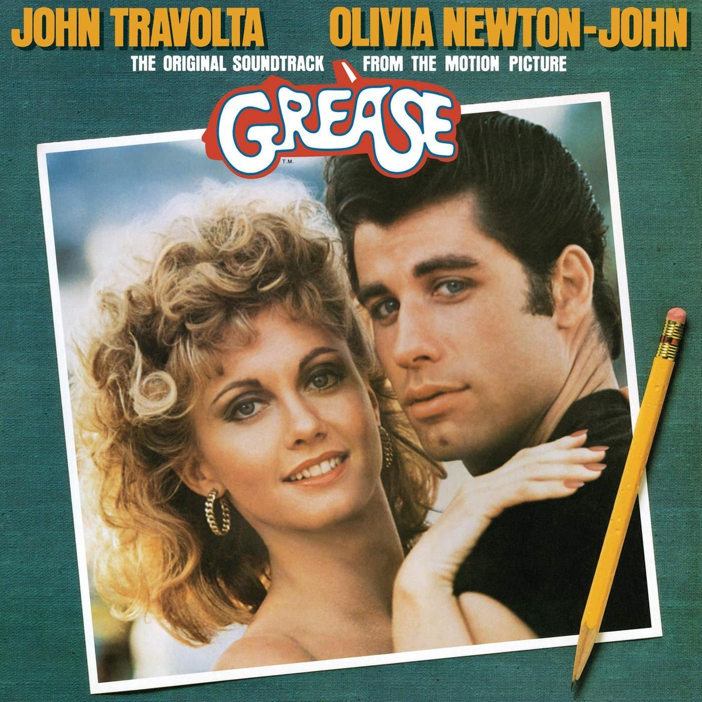

▷ Je kan de film vinden op Netflix
▷ Er is 1 film
▷ Het is voor 6 jaar en ouder
▷ Genre: musical en romantisch
▷ Cast: John Travolta (Danny) / Olivia Newton (Sandy) / Stockard Channing (Betty Rizzo) / Didi Conn (Frenchy)
▷ Samenvatting: Het is een musical uit de jaren 50. Een nieuw schooljaar begint op de Rydell Hiigh school. In de zomervakantie heeft de hunk van de school het meisje van zijn dromen ontmoet. Hij denkt haar nooit meer te zien, maar schept erg op over haar tegen zijn vrienden. Dit schooljaar is er ook een nieuw meisje op school gekomenen genaamd Sandy. Ze hangt rond met de pink ladies (populaire meiden van de school). Ze vertelt dat ze de hele zomer met een lieve jongen is opgetrokken genaamd Danny. De pink ladies kennen hem natuurlijk, maar daar weet Sandy niks van. Uiteindelijk komen ze elkaar tegen op school en gebeuren er allemaal dingen.
▷ Onze mening: Wij vinden het beide een leuke film. En het is een film je gezien moet hebben.
